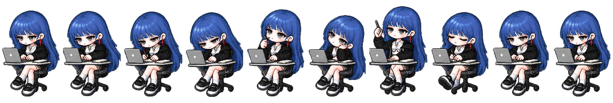

人生不是轨道，
而是旷野。
沿着好奇心出发，把每一次尝试，都变成通往游戏世界的路。
01
WHO I AM
个人介绍

HELLO, NICE TO MEET YOU.
知之者不如好之者，
好之者不如乐之者。
一个习惯先把问题想清楚、再动手实现的 INTP；对游戏保持好奇，也愿意为喜欢的体验反复打磨。
01
爱好
- 游戏
偏爱独立游戏、叙事解谜与轻策略，也喜欢观察小体量作品如何建立鲜明表达。
- 户外
滑板、徒步和旅行。换一个环境走走，既收集风景，也给大脑留一点空白。
- 流行文化
会听 K-pop、看动漫，关注舞台、角色与视觉设计带来的情绪和记忆点。
02
关键词
02
MY JOURNEY
个人经历
-
本科课程让我接触计算机图形学、数据结构与算法、C# 面向对象程序设计，以及三维建模与可视化，为实时交互开发打下了第一层基础。
-
02
跟随导师参与 AI 手语项目后，我第一次把机器学习、穿戴设备采集的数据与 Unity 数字人连接起来：数据经过骨骼绑定，最终由数字人完成手语表达。项目获得国家三等奖，并形成软件著作权成果。
-
03
兴趣开始有了清晰方向。我从引擎基础、交互逻辑一路学到项目工程化，也持续关注数字孪生与虚拟仿真，让零散知识逐渐成为能够落地的能力体系。
-
04
接触 VR 设备后，我开始制作沉浸式交互项目，并在多项数字化与创新设计比赛中获得奖项。比赛训练了我在有限时间内定义问题、组织协作并交付可体验成果的能力。
-
05
系统学习 Unity 游戏开发、参加多次 21 天 Game Jam，并在暑期进入游戏公司实习后，我经历了从快速原型到真实团队协作的完整过程，也由此确定游戏客户端开发是想长期投入的方向。
PHOTO NOTES
沿途影像
01 / 12
03 / KEEP IN TOUCH
世界很大，
EMAIL2846314132@qq.com
↗
GITHUBtujiali53-alt
↗
BILIBILI@图图在线编译
↗
世界很大，
期待同路相遇。
如果你有合适的岗位、项目想法，或刚好也喜欢独立游戏，欢迎从下面任一入口找到我。
JIALI TU · UNITY CLIENT DEVELOPER · 2026